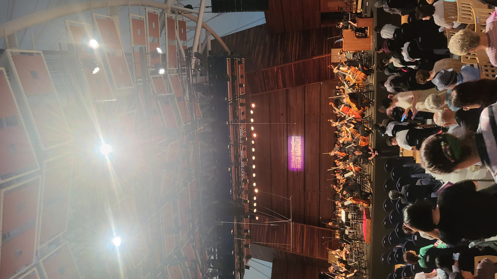
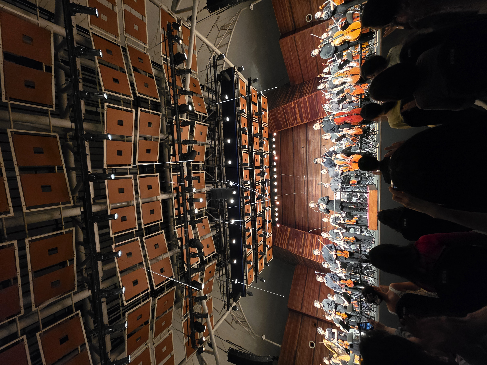

A Great Conductor, and a Deeper Love for Mahler


Pyeongchang is a place where the 2018 Winter Olympics took place. It is far from Seoul, and it is located in the middle of some mountains. But besides that, every summer thousands of fans of classical music travel to this remote place for the annual "Music in PyeongChang." And for 2025, I saw that the opening piece was Mahler's Second Symphony, "Resurrection," conducted by Jonathan Stockhammer with the Seoul Philharmonic Orchestra. Just a few months ago, I saw SPO play the same piece under chief conductor Jaap van Zweden, but if it's Mahler, and especially his Second Symphony, Resurrection, there is no reason not to listen to it again, also considering that SPO is the most skilled orchestra in Korea.
I booked my seat right away, almost right in front of the conductor. The train and the hotel — everything was perfect. All of this journey for one reason: Mahler. And for me, Mahler is just so special. After years of wandering — through Beethoven, Brahms, Tchaikovsky, Rachmaninoff, Chopin, and numerous other composers — Mahler has been my favorite for a few years now. It is not quite accurate, and many scholars argue the same, that we shouldn't interpret his music as a direct reflection of his own emotions and experiences. And yet, I find that I can resonate with and understand the meaning of each movement in his symphonies more deeply than any other composer's.
The stage isn't a normal concert hall. It was a huge tent. For a piece like the Resurrection Symphony, it seemed quite tough to fit all in — with the huge string and brass sections, numerous percussionists, and the choir and soloists behind the orchestra. The acoustics can't be compared to a regular concert hall, and there isn't even a proper pipe organ, which is essential for the finale. None of that mattered though — since the moment I arrived at Pyeongchang, I couldn't even eat well. I was just so nervous and anticipating this performance.
The performance was overall really good. From the first movement, in the beginning part there were some problems where the cellos and bass sections weren't aligning that well. Also, the conductor had a very long break after the first movement, and it felt awkward since I never experienced this in a Resurrection Symphony performance — but then I later found that Mahler actually wrote in the music to have at least five minutes of break before starting. I could really feel that Conductor Jonathan Stockhammer really studied the piece very well. And that long break did create a huge difference as Mahler intended, by separating the dramatic Trauermarsch, or death march first movement, from the Andante movement. I remember by the breakthrough moment in the third movement I already had tears running down in awe. Then the Urlicht movement, one of the most slow and beautiful movements in Mahler (which I personally think), was played. And in the final movement, it was fun to see the backstage horn part being played at the side of the music tent. And at the end, when the choir and orchestra finally were screaming for resurrection, I was completely overwhelmed.
During the curtain call, what stood out was that the conductor raised the music score in front of the audience, and this made all the audience clap and applaud for the composer Mahler, not the orchestra and choir. This was very unusual, but I could again feel how much the conductor respected Mahler and felt connected to him.